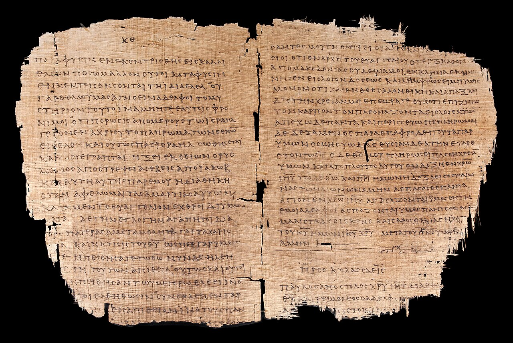
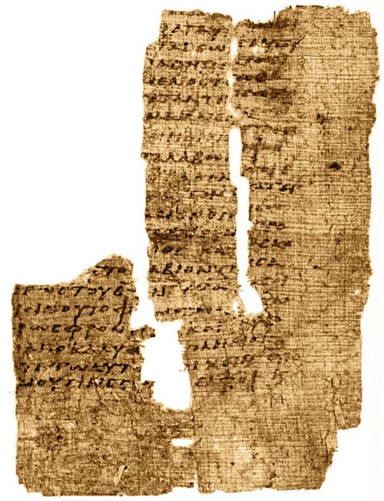
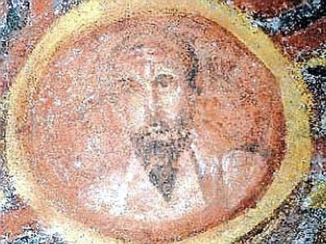

Dos palabras en arameo al final de una carta griega prueban más que el himno de Filipenses, y casi nadie las cita.
La historia se cuenta así, y se cuenta bien, porque es ordenada y es pedagógica. Marcos, el evangelio más antiguo, presenta a un hombre: un carpintero galileo al que el cielo declara hijo suyo en el bautismo. Mateo y Lucas le añaden una concepción virginal, de modo que ya lo es desde el principio. Juan lo hace preexistente, un Verbo que estaba junto a Dios antes de la creación. Y trescientos años después, Nicea remata.
Una pendiente. Un dibujo que sube de izquierda a derecha y que explica el final por la suma de los pasos. Y se rompe con una sola fecha.
Las siete cartas que nadie discute que escribió Pablo —Romanos, las dos a los Corintios, Gálatas, Filipenses, 1 Tesalonicenses y Filemón— se fechan entre los años cuarenta y ocho y los sesenta y dos. El evangelio de Marcos se fecha hacia el setenta, con una horquilla de consenso que va del sesenta y cinco al setenta y cinco.
Es decir: los textos cristianos más antiguos que se conservan no son los evangelios. Son cartas, y preceden al primer evangelio en una distancia que, según qué extremos se tomen, va de unos catorce a unos veintisiete años.
Conviene no exagerar la precisión, porque exagerarla sería cometer el mismo vicio que estamos denunciando. «Pablo escribe veinte años antes que Marcos» es correcto como orden de magnitud y engañoso como dato: los dos extremos tienen márgenes de cinco a siete años, y la datación de Marcos lleva décadas moviéndose dentro de ese rango.
Lo que importa es el orden, no los números exactos. Y el orden dice que en los textos más antiguos está ya el material cristológico más elevado del Nuevo Testamento.

Hay además un segundo problema, y es más fino que el de las fechas. Comparar «Marcos 70» con «Pablo 55» como si fueran dos fotogramas de una misma película supone que la cristología de un texto es la de su fecha de redacción. Y no lo es.
Los evangelios son compilaciones de tradiciones anteriores. Que Marcos se escriba hacia el año setenta no significa que su cristología sea la del año setenta: significa que el material que recoge estaba disponible como muy tarde en esa fecha. La fecha de un documento es el terminus ad quem de las tradiciones que contiene, no su terminus a quo.
Esto no tiene nombre técnico establecido en la bibliografía, y no voy a inventarle uno. Circulan etiquetas —«falacia cronológica», «falacia del documento tardío»— que no son terminología reconocida, sino acuñaciones de quien las usa. Se enuncia con los dos términos latinos y se entiende igual de bien.
Llegados aquí, el movimiento habitual es sacar el himno. Filipenses 2,6-11: el texto que dice que Cristo, «siendo en forma de Dios», no retuvo como rapiña la igualdad con Dios, sino que se vació, tomó forma de siervo y se humilló hasta la muerte de cruz; y que por eso Dios lo exaltó y le dio el nombre sobre todo nombre, para que toda rodilla se doble y toda lengua confiese. Se sostiene que Pablo no lo compuso, sino que lo cita: que es un himno anterior a él, por razones formales —la fórmula con pronombre relativo, el ritmo, el vocabulario inusual, el lenguaje elevado—. Y de ahí se concluye que lo más alto es anterior a los años cincuenta.
Ese argumento no se sostiene en la forma en que se usa, y hay que decirlo aunque nos convenga lo contrario.
Es circular. El criterio principal para fechar el material como prepaulino es precisamente su carácter «no paulino», de modo que la conclusión está metida en la premisa. Gordon Fee lo dijo en 1992 con una fórmula que ha hecho fortuna: no es un himno citado, es prosa paulina exaltada. Ralph Brucker, en 1997, lo lee como prosa epidíctica, un género retórico grecorromano bien documentado. Y en 2015 Benjamin Edsall y Jennifer Strawbridge desmontaron uno a uno los cinco criterios clásicos de Ralph Martin: la prosa rítmica era normal en la escritura formal grecorromana, el pronombre relativo como marcador es circular, y falta la estructura tripartita que un himno antiguo tendría.
Pero el argumento que de verdad pesa es otro, y es de recepción. El pasaje se cita más de quinientas setenta veces en la literatura cristiana anterior a Nicea. Y en ninguna de esas quinientas setenta veces un autor antiguo lo llama himno ni lo sitúa en un contexto litúrgico. Nadie, durante tres siglos, parece haber sabido que estaba leyendo una canción.
Hay además un detalle que da vértigo cuando se cae en él. La «forma de himno» que ve el lector moderno —las estrofas, los versos cortos, la sangría— no está en los manuscritos: es una decisión editorial del siglo XX. La disposición estrófica que imprime el Nestle-Aland, que es la edición crítica que todo el mundo usa, es la que propuso Ernst Lohmeyer en 1928. Vemos un himno porque un alemán decidió maquetarlo así hace cien años.

Conste que no todo el mundo lo da por perdido: Hengel, Hofius, Martin y el propio Hurtado siguen defendiendo la hipótesis con cautelas, y en 2015 Michael Wade Martin y Bryan Nash publicaron una defensa nueva del carácter hímnico. El estado de la cuestión es debate abierto y en retroceso, no consenso en ninguna de las dos direcciones.
Lo que sí aguanta de Filipenses 2 es otra cosa, y es importante: el final del pasaje aplica a Jesús Isaías 45,23, dentro del tramo más insistentemente monoteísta de todo el Deuteroisaías, donde la rodilla que se dobla y la lengua que confiesa se doblan y confiesan ante YHWH. Esa alusión no la discute nadie. Lo que se discute es cuánto peso soporta. Y el mismo Pablo cita el mismo versículo, referido a Dios, en Romanos 14,11.
La mejor prueba de esta entrega es la que menos se cita, y cabe en dos palabras.
Al final de la primera carta a los Corintios, escribiendo en griego a una comunidad griega de una ciudad griega, Pablo escribe maranatha. Y no lo traduce.
Una fórmula aramea conservada sin traducir dentro de una carta griega solo tiene una explicación razonable: que llegara ya fosilizada, como fórmula heredada, acuñada en el medio arameófono de Palestina o de Siria y, por tanto, anterior a la misión griega de Pablo. Es exactamente el mismo tipo de argumento que el abba de Romanos 8 y Gálatas 4. Y la fórmula reaparece, también sin traducir, en la Didaché, en contexto eucarístico.
De aquí se sigue algo, y conviene decir exactamente qué. Se sigue que ya en los años treinta o cuarenta, en comunidades que hablaban arameo, a Jesús se le invocaba —no solo se le recordaba— con el título «Señor nuestro», en lo que formalmente es una plegaria dirigida a él.
Y no se sigue el resto, que es donde la divulgación se despeña. Mar en arameo no es el tetragrámaton: es un título de respeto que se aplica a un maestro, a un patrón o a un soberano. La ecuación «Señor» igual a YHWH funciona en el griego de la Septuaginta, no automáticamente en el arameo. La fórmula es escatológica, no ontológica: pide una venida, no describe una naturaleza. Y hay encima un problema de corte: los manuscritos antiguos no separan las palabras, y según dónde se corte se lee «Señor nuestro, ven» o «nuestro Señor ha venido». La primera lectura es mayoritaria. La segunda deja la fórmula sin fuerza invocatoria.
La pendiente que todo el mundo dibuja —Marcos humano, Juan preexistente, Nicea remata— se rompe con mirar el orden real de los documentos. Pero las pruebas que se usan para romperla tampoco prueban todo lo que se les hace decir. Cada fila trae las dos cosas: qué establece y qué no. Pulsa cualquiera.
Si la curva no existe, la pregunta «¿cuándo se convirtió?» hay que rehacerla. Hay al menos cuatro maneras serias de rehacerla, y tienen nombres.
La primera es la explosión temprana, de Larry Hurtado y Richard Bauckham. El argumento de Hurtado es histórico y no doctrinal: lo decisivo no son los títulos sino un patrón devocional observable, y sin paralelo en el judaísmo del Segundo Templo — se invoca a Jesús en la plegaria, se bautiza en su nombre, se le cantan himnos, se le aclama, se celebra una comida cultual suya. Hurtado lo llamó culto binitario, y después prefirió diádico para que nadie leyera ahí una Trinidad incipiente. No es un culto nuevo a una segunda divinidad: es una mutación dentro del monoteísmo judío, y está en marcha antes de Pablo. Bauckham llega a algo parecido por otro camino: su categoría no es «naturaleza» sino identidad divina, definida por la creación, la soberanía, el Nombre y el culto, y sostiene que los primeros cristianos incluyeron a Jesús dentro de los cuatro rasgos.
La segunda es la de James Dunn y Maurice Casey, y se resume en que «alto» no significa «niceno». Que haya culto a Jesús no está en discusión; lo que se discute es qué se sigue. Para Dunn, los primeros cristianos no veían el culto a Jesús como alternativa al culto a Dios: es culto a Dios a través de Jesús. Y dedica una sección entera de su libro de 2010 a preguntar hasta qué punto ayuda reformular el problema en términos de «identidad divina», que es tanto como decir: a discutirle la categoría a Bauckham.
La tercera es la de Bart Ehrman, y aquí hay que deshacer un malentendido que se repite en los dos bandos. Su tesis no es que una cristología baja evolucionara hacia una alta. Es que dos modelos —el de exaltación, donde un hombre es elevado en un momento determinado, y el de encarnación, donde un preexistente desciende— coexistieron desde muy pronto en comunidades distintas, y el primero sobrevivió mucho después de aparecer el segundo. En este punto Ehrman es aliado de la crítica a la curva, no su exponente. Su otra aportación está respaldada muy por fuera de él: en el mundo antiguo la divinidad no era binaria sino una escala. Filón llama al Logos «segundo Dios». Justino llamará a Cristo «otro Dios». Llamar dios a alguien en el siglo I no es automáticamente identificarlo con YHWH.
Y la cuarta no es una respuesta sino una objeción al método, de Michael Kok y Paula Fredriksen, y es la más incómoda de las cuatro. Kok señala que el paradigma evolutivo y el modelo que viene a sustituirlo comparten un vicio: los dos presuponen una trayectoria unilineal que culmina en la divinización de Jesús. Fechar la cristología alta lo más pronto posible convierte el reconocimiento en algo instantáneo, cuando el objeto propio del historiador debería ser la cristología más antigua que se pueda recuperar, que no es lo mismo que la más alta que se pueda fechar pronto. Añade dos reproches más: que apoyarse solo en fuentes judías aísla la devoción a Cristo de las influencias grecorromanas, el culto imperial entre ellas, y que los sinópticos no articulan preexistencia, lo que estropea el retrato de un cristianismo primitivo homogéneo.
El dato no es la doctrina: es el culto. Se invoca a Jesús, se bautiza en su nombre, se le cantan himnos. Y Pablo lo da por supuesto sin argumentarlo.
La categoría no es «naturaleza» sino identidad divina: creación, soberanía, el Nombre y el culto. Jesús queda incluido en los cuatro rasgos.
Sí hubo culto — pero «los primeros cristianos no lo veían como alternativa al culto a Dios». Es culto a Dios a través de Jesús.
El monoteísmo judío «puro» que el argumento necesita nunca existió; y el Cristo de 1 Corintios 15,24-28 está subordinado al Padre.
Los dos modelos comparten el vicio: presuponen una trayectoria unilineal que culmina en la divinización. Y la historia no decide verdades teológicas.
Hay una pieza que no encaja bien en ninguno de los cuatro programas, y viene de fuera: del estudio de la institución romana de la adopción.
Michael Peppard ha mostrado que en el mundo romano la adopción no era una filiación de segunda. Era el mecanismo normal y prestigioso por el que las élites aseguraban la sucesión, y la condición de Augusto como divi filius, hijo del divino, descansa precisamente sobre su adopción por el César divinizado. Además, la adopción imperial se entendía a menudo como una declaración de los dioses.
La consecuencia para nosotros es de categorías, no de datos: llamar «adopcionista» a una cristología para colocarla en el escalón de abajo usa una jerarquía que el siglo I no tenía. En el mundo de Pablo, decir que Dios adoptó a alguien como hijo no era rebajarlo. El escalón de abajo lo hemos puesto nosotros, y lo hemos puesto con material niceno.
Conviene dar también las objeciones que ha recibido, porque las tiene y son de fondo: que deriva el título «Hijo de Dios» casi exclusivamente de César y Octaviano, descuidando las raíces helenísticas y las tradiciones egipcia, asiria e israelita, probablemente más relevantes para el cristianismo primitivo; y que los lectores de Marcos conocían a la vez la ideología imperial romana y la Escritura judía.

No concluye que todo estuviera ahí desde el principio. Esa es la tesis contraria a la curva y es igual de mala: convierte treinta años de discusiones en un desembalaje.
Lo que concluye es más modesto y más útil. Que la pregunta «¿cuándo?» está mal planteada mientras se suponga una sola línea; que el material más elevado está en los textos más antiguos, no en los más tardíos; y que lo que ocurre entre el año treinta y el cuatrocientos cincuenta y uno no se parece a una pendiente.
Se parece, como veremos a partir de la entrega siguiente, a un campo ancho que se estrecha.
La manera cómoda de escribir este capítulo era usar Filipenses 2 como himno prepaulino y cerrar el asunto en tres párrafos. No se puede, porque el argumento es circular y porque lleva treinta años recibiendo objeciones publicadas que nadie ha refutado.
Soltarlo cuesta un argumento y gana algo más valioso: lo que queda en pie —el orden de los documentos y el maranatha arameo— aguanta solo, y no depende de una hipótesis literaria alemana de 1928. Cuando un argumento hay que defenderlo con la premisa que quería demostrar, conviene dejarlo ir antes de que lo deje ir otro por ti.
Es consenso que las siete cartas indiscutidas de Pablo preceden a todos los evangelios conservados; que maranatha es arameo y está sin traducir en una carta griega; que Filipenses 2,10-11 alude a Isaías 45,23; y que en el mundo antiguo la divinidad se concebía gradualmente y no como una frontera binaria.
Está en debate abierto casi todo lo demás, y la entrega lo dice dentro y no en esta nota: si Filipenses 2,6-11 es un himno citado o prosa paulina exaltada —Fee, Brucker y Edsall-Strawbridge contra Hengel, Hofius y Martin—; si 1 Corintios 8,6 reformula el Shemá incluyendo a Jesús, como sostiene Bauckham, o lo amplía, como replican McGrath y Fredriksen; y si la lectura adánica de Dunn y Casey describe bien el pasaje, que es hoy posición minoritaria pero no abandonada.
Una precisión de vocabulario que afecta a toda la serie. Las etiquetas «cristología alta» y «cristología baja» son cómodas y las seguimos usando, pero son un eje niceno aplicado a textos anteriores a Nicea, como se dijo en la primera entrega. Y «adopcionista» arrastra además una jerarquía romana que el propio mundo romano no tenía.
Y una cautela sobre las cifras. «Pablo escribe veinte años antes que Marcos» es correcto como orden de magnitud y falsamente preciso como dato: los dos extremos tienen márgenes de cinco a siete años. Damos la horquilla, como hicimos con las sesenta y cinco o sesenta y seis apariciones del Sheol, porque redondear a un número limpio es el primer paso para convertir una estimación en un hecho.
Sobre la datación. W. R. Telford, The Theology of the Gospel of Mark, Cambridge University Press, 1999 · Helen K. Bond, The First Biography of Jesus, Eerdmans, 2020 · para la propuesta minoritaria, James G. Crossley, The Date of Mark's Gospel, T&T Clark, 2004, con las reseñas que la discuten.
Sobre Filipenses 2,6-11. Ernst Lohmeyer, Kyrios Jesus. Eine Untersuchung zu Phil. 2,5-11, Heidelberg, 1928 · Ralph P. Martin, Carmen Christi, 1967 · Gordon D. Fee, «Philippians 2:5-11: Hymn or Exalted Pauline Prose?», Bulletin for Biblical Research 2 (1992) 29-46 · Ralph Brucker, Christushymnen oder «epideiktische Passagen»?, FRLANT 176, 1997 · Benjamin Edsall y Jennifer R. Strawbridge, «The Songs we Used to Sing? Hymn "Traditions" and Reception in Pauline Letters», JSNT 37/3 (2015) 290-311 · Michael Wade Martin y Bryan A. Nash, «Philippians 2:6-11 as Subversive Hymnos», JTS 66 (2015) 90-138.
Sobre el culto y la identidad divina. Larry W. Hurtado, One God, One Lord, 1988, y Lord Jesus Christ: Devotion to Jesus in Earliest Christianity, Eerdmans, 2003 · Richard Bauckham, God Crucified, 1998, y Jesus and the God of Israel, Eerdmans, 2008 · James D. G. Dunn, Christology in the Making, 2.ª ed., 1989, y Did the First Christians Worship Jesus?, 2010 · Maurice Casey, From Jewish Prophet to Gentile God, 1991 · James F. McGrath, The Only True God, University of Illinois Press, 2009.
Sobre el método. Michael J. Kok, «Critical Questions for the Early High Christology Club», The Bible and Interpretation, julio de 2015 —pieza de opinión académica, y se cita como tal— · Paula Fredriksen, «How High Can Early High Christology Be?», en M. V. Novenson (ed.), Monotheism and Christology in Greco-Roman Antiquity, Brill, 2020, 293-319 · Michael Peppard, The Son of God in the Roman World, Oxford University Press, 2011, con las reseñas de Babett Edelmann-Singer en sehepunkte 12 (2012) y de Joshua W. Jipp en Themelios 37/1 · Bart D. Ehrman, How Jesus Became God, HarperOne, 2014.
Sobre el maranatha. C. F. D. Moule, «A Reconsideration of the Context of Maranatha», NTS 6 (1959-60) 307-310 · Martin Hengel, «Abba, Maranatha, Hosanna und die Anfänge der Christologie» · Didaché 10,6.